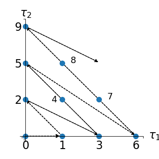
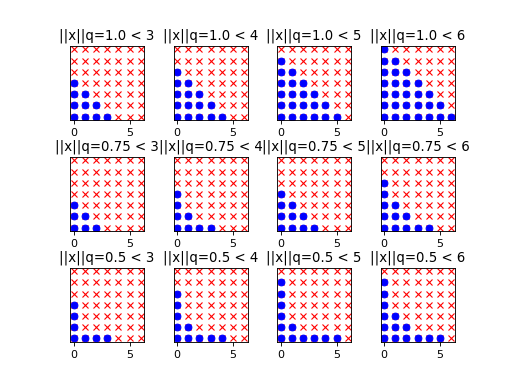

Chaos basis enumeration strategies¶
 of the
model under consideration. More precisely, the response is cast
as a converging series featuring orthonormal polynomials. For
computational purpose, it is necessary though to retain a finite
number of terms by truncating the expansion. First of all, a specific
strategy for enumerating the infinite PC series has to be defined.
This is the scope of the current section.
of the
model under consideration. More precisely, the response is cast
as a converging series featuring orthonormal polynomials. For
computational purpose, it is necessary though to retain a finite
number of terms by truncating the expansion. First of all, a specific
strategy for enumerating the infinite PC series has to be defined.
This is the scope of the current section.Given an input random vector  with prescribed
probability density function (PDF)
with prescribed
probability density function (PDF)  , it is
possible to build up a polynomial chaos (PC) basis
, it is
possible to build up a polynomial chaos (PC) basis
 . Of interest is the definition of
enumeration strategies for exploring this basis, i.e. of suitable
enumeration functions
. Of interest is the definition of
enumeration strategies for exploring this basis, i.e. of suitable
enumeration functions  from
from  to
to  ,
which creates a one-to-one mapping between an integer
,
which creates a one-to-one mapping between an integer  and a
multi-index
and a
multi-index  .
.
Linear enumeration strategy¶
Let us first define the total degree of any multi-index
in by  . A natural choice to
sort the PC basis (i.e. the multi-indices ) is the
lexicographical order with a constraint of increasing total degree.
Mathematically speaking, a bijective enumeration function
is defined by:
. A natural choice to
sort the PC basis (i.e. the multi-indices ) is the
lexicographical order with a constraint of increasing total degree.
Mathematically speaking, a bijective enumeration function
is defined by:

such that:

and

Such an enumeration strategy is illustrated in a two-dimensional case
(i.e.  ) in the figure below:
) in the figure below:
(Source code, png, hires.png, pdf)

This corresponds to the following enumeration of the multi-indices:
|
|
|---|---|
|
|
|
|
|
|
|
|
|
|
|
|
|
|
|
|
|
|
|
|


Hyperbolic enumeration strategy¶
 in
in ![(0,1]](../../_images/math/ab615cb74c57e4fb00d2d0ffd736b5f13a68f58b.svg) , one defines the
-hyperbolic norm (or -norm for short) of a
multi-index by:
, one defines the
-hyperbolic norm (or -norm for short) of a
multi-index by:
Strictly speaking,
is not properly a norm but rather a quasi-norm since it does not satisfy the triangular inequality. However this abuse of language will be used in the following. Note that the case
corresponds to the definition of the total degree.

 be a real positive number. One defines the set of
multi-indices with -norm not greater than as
follows:
be a real positive number. One defines the set of
multi-indices with -norm not greater than as
follows:(1)¶
Moreover, one defines the front of
by:
where
is a multi-index with a unit
-entry and zero
-entries,
.

 by progressively
increasing the -norm of its elements. In this purpose, one
wants to construct an enumeration function that relies upon (1) the
bijection defined in the previous paragraph and (2) an
appropriate increasing sequence
by progressively
increasing the -norm of its elements. In this purpose, one
wants to construct an enumeration function that relies upon (1) the
bijection defined in the previous paragraph and (2) an
appropriate increasing sequence  that tends
to infinity. Such a sequence can be used to define a specific
partition of into stratas
that tends
to infinity. Such a sequence can be used to define a specific
partition of into stratas  .
Precisely, the enumeration of the multi-indices is achieved by sorting
the elements of
.
Precisely, the enumeration of the multi-indices is achieved by sorting
the elements of  in ascending order of the
-norm, and then by sorting the possible elements having the
same -norm using the bijection . Several examples
of partition are given in the sequel. as the set of natural integers
. Thus we build up a sequence
of stratas as follows:
in ascending order of the
-norm, and then by sorting the possible elements having the
same -norm using the bijection . Several examples
of partition are given in the sequel. as the set of natural integers
. Thus we build up a sequence
of stratas as follows:
The progressive exploration of

(Source code, png, hires.png, pdf)

is low. Note that
setting equal to 1 corresponds to the usual linear
enumeration strategy. Then the retained polynomials are located under
a straight line, hence the label linear enumeration strategy. In
contrast, when  , the retained basis polynomials are
located under an hyperbola, hence the name hyperbolic enumeration
strategy. recursively by:
, the retained basis polynomials are
located under an hyperbola, hence the name hyperbolic enumeration
strategy. recursively by:
In other words,
is the infimum of the real numbers
Note that this partition of


Anisotropic hyperbolic enumeration strategy¶
where the
’s are real positive numbers. This would lead to first select the basis polynomials depending on a specific subset of input variables.
 of
the multi-indices by partitioning it according to one of the two
schemes outlined in the previous paragraph (it is only necessary to
replace the isotropic -norm in (1) with the
of
the multi-indices by partitioning it according to one of the two
schemes outlined in the previous paragraph (it is only necessary to
replace the isotropic -norm in (1) with the
 -anisotropic one).. Then the sequence
is equal to and the sets
are defined by:
-anisotropic one).. Then the sequence
is equal to and the sets
are defined by:
If stratas with larger cardinalities are of interest, one may rather consider the partial degree of the least significant variable, i.e. the one associated with the greatest weight
in the previous formula has to be defined by:


{kind=link}
{kind=link}
{kind=link}
{kind=link}
Examples:
References: